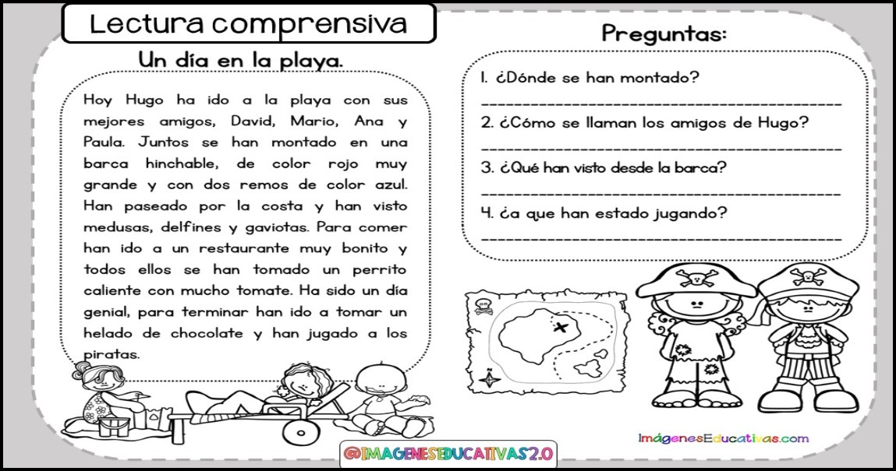
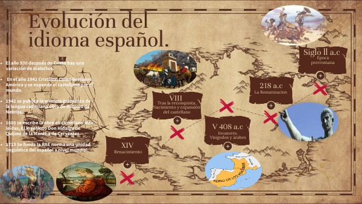
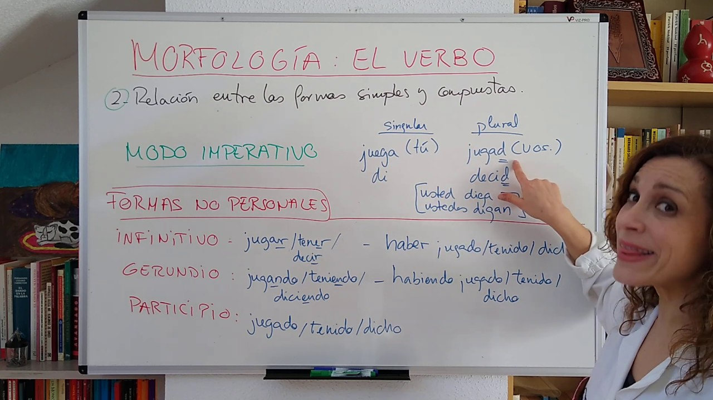
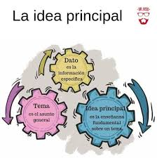
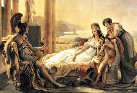

La literatura es el arte que utiliza las palabras como medio de expresión. A través de cuentos, poemas, novelas, obras de teatro y ensayos, transmite ideas, emociones y conocimientos. Refleja la cultura y los valores de una sociedad y puede ser tanto oral como escrita.
Es una expresión artística antigua, los primeros vestigios datan aproximadamente del año 3000 a.C., y una de las obras más antiguas conservadas es el Poema de Gilgamesh.
Surge de la creatividad y originalidad de cada autor para exponer historias reales basadas en experiencias o sensaciones, así como para crear historias ficticias y cargadas de imaginación y fantasía.
Las descripciones de los relatos se valen del uso de las figuras literarias o figuras retóricas, que son formas no convencionales del uso del lenguaje. Por ejemplo, la metáfora, el símil, el oxímoron, entre otros.
Lectura comprensiva
La lectura comprensiva consiste en leer un texto entendiendo completamente lo que dice. No solo se trata de leer palabras, sino de captar el mensaje, el propósito del autor, las ideas principales y secundarias, y hacer inferencias. Es fundamental para el aprendizaje en cualquier materia.
La lectura comprensiva implica varias capacidades cognitivas, como la decodificación de palabras, el reconocimiento de vocabulario, la conexión de ideas y la deducción de significados implícitos. Es un proceso activo donde el lector interactúa con el texto, haciendo preguntas, visualizando escenas y relacionando el contenido con su propio conocimiento y experiencias.
Una primera etapa de pre-lectura, con actividades y ejercicios antes de hacer la lectura, poniendo al alumno en contexto y preparándolo para lo que va a leer. En esta primera etapa, se trabajan las ideas previas y el vocabulario.
Una segunda etapa de lectura comprensiva en la que se hacen actividades durante la lectura. Sin dejar de trabajar los aspectos de la etapa anterior, se plantean preguntas con respuestas que implican la detección de información literal e inferencial que se encuentra en el texto leído. También es muy importante considerar qué es lo que sucede internamente en los procesos de atención, durante la lectura. En esta etapa, las estrategias a trabajar son: el monitoreo atencional y la identificación de información nueva y conocida. El niño debe poder detectar cuándo ha dejado de tener una lectura atenta o cuándo hay información nueva o conocida para poder relacionarla con la propia.
Una tercera etapa de post-lectura, dirigida a comprender y reflexionar sobre el texto leído. En esta etapa, se consolidarán las destrezas practicadas durante todo el proceso anterior, y se podrán realizar resúmenes, mapas conceptuales, parafraseo de lo leído, entre otras.

Origen del idioma español
El idioma español proviene del latín vulgar, una forma del latín que hablaban los soldados y el pueblo del Imperio Romano. Tras la caída del Imperio Romano, el latín se mezcló con lenguas locales en la Península Ibérica, dando origen al castellano, que más tarde se convertiría en el español.
La historia externa del español alude a la descripción cronológica de las influencias culturales, históricas, políticas y sociales que influyeron en los hechos lingüísticos. La historia externa contrasta con la historia interna (a veces llamada gramática histórica) del español, que refiere a la descripción cronológica y la sucesión de cambios acaecidos dentro del propio sistema de la lengua.
Los aportes prerromanos a la lengua española (anteriores al latín; es decir, a la conquista romana y romanización que comienza en el siglo III a. C. y no se completa hasta el siglo I a. C. —en algunas zonas con poca efectividad—) son los correspondientes a las lenguas de los pueblos indígenas de la península ibérica (pueblos celtas en la Meseta, el norte y el oeste, pueblos iberos en la zona este y sur, celtíberos en la zona intermedia y tartesios en la zona suroeste), entre las que estaba la antecesora del idioma vasco (perteneciente a un grupo no indoeuropeo, relacionado por tanto con las lenguas iberas y no con las lenguas célticas), y las de los pueblos colonizadores (cartagineses y fenicios, que hablaban una lengua semítica, y griegos).

Análisis verbal
El análisis verbal es el estudio de las palabras en un texto para entender su función, estructura y significado. Incluye identificar sustantivos, verbos, adjetivos, pronombres, etc., y cómo se relacionan entre sí en una oración. Sirve para mejorar la comprensión y expresión oral y escrita.
Una conducta se considera verbal cuando esta es reforzada socialmente, mediante otra persona. Cuando usamos el término “verbal” no nos referimos al lenguaje vocal emitido cuando hablamos, sino a que tiene consecuencias sobre las demás personas. Por tanto, una conducta vocal como chillar, puede ser verbal si presenta esta funcionalidad, pero también lo puede ser el uso de la lengua de signos, gestos o el intercambio de imágenes. “Vocal” solamente hace referencia a una topografía de respuesta. Para el ACV la enseñanza del lenguaje vocal es una prioridad en personas que no lo aprenden de forma típica y natural como puede pasar en los TEA (Trastornos del Espectro Autista). Solamente si este tipo de conducta verbal vocal no se logra se puede optar por enseñar mediante otras topografías (signos, gestos o Sistemas Alternativos de Comunicación). El objetivo principal es la enseñanza de la función verbal y el objetivo secundario es enseñar las formas verbales.

La idea principal en la comprensión lectora
La idea principal es el mensaje más importante que el autor quiere transmitir en un texto.
Ejemplo de un texto informativo: En un artículo sobre la importancia del reciclaje, la idea principal de un párrafo podría ser: «El reciclaje reduce significativamente la cantidad de residuos que terminan en los vertederos.» Esta idea es el mensaje central que el autor quiere que el lector entienda.
Ejemplo de un texto narrativo: En una novela, la idea principal de un párrafo podría ser la evolución de un personaje: «Juan comenzó a darse cuenta de que su verdadera pasión era la música, no la ingeniería.» Aquí, la idea principal se centra en el descubrimiento personal del personaje.

Roma y su literatura
La literatura romana fue influida por la griega y usaba el latín. Destacaron géneros como la épica, la poesía lírica, la comedia y la tragedia.
La literatura romana indígena ha dejado muy pocos vestigios y solo nos ofrece fragmentos, que proceden del origen de Roma y ensayos de arcaísmos que proceden fundamentalmente de tiempos de la República, de los emperadores y principalmente de los Antoninos.
La literatura romana imitada ha producido composiciones en que la inspiración individual se junta a la imitación más feliz, obras numerosas y elegidas que nos han llegado entera. A veces se ha solido confundir las obras de origen italiano, producciones más toscas del genio agrícola o religioso de los primitivos romanos (que ofrecen un carácter más original), con las copias latinas de las obras maestras de Grecia, que ofrecen un encanto, una elegancia y una suavidad correspondientes a una civilización culta y refinada.

Géneros literarios
Los géneros literarios son los diferentes grupos o categorías en las que podemos clasificar las obras literarias atendiendo a su contenido y estructura.
La lírica: La lírica presenta la realidad desde un punto de vista totalmente subjetivo, pudiendo ser la realidad del autor o una realidad ficticia o deformada por el mismo. Suelen mostrar una perspectiva íntima mediante la expresión de sentimientos, vivencias o emociones. La modalidad de expresión más utilizada en este género es el verso. Los subgéneros pertenecientes a la lírica se dividen en dos grandes grupos.
La épica o narrativa: Dentro de la variedad de géneros literarios, la épica presenta la realidad de forma objetiva o subjetiva, ya que en la mayoría de casos las obras tienen carácter ficticio en su totalidad o de forma parcial. El autor describe lugares, personas, situaciones, ambientes, acontecimientos históricos… Todo bajo el pretexto de que puede ser real, o no. Los personajes interactúan entre ellos a través de monólogos o diálogos, y el autor puede narrar de diversas formas. En todos los casos, la intención del narrador es comunicativa.
La dramática: Como en la narrativa, se presenta un conjunto de personajes o un solo personaje frente a una serie de conflictos. El autor no los presenta ni los describe, y tampoco les guía para que hablen o actúen siguiendo sus órdenes. Las obras dramáticas, conocidas gracias al teatro, son protagonizadas por actores y actrices que prestan su cuerpo y su voz a los personajes, actuando en un espacio escénico durante el tiempo que dure la obra.